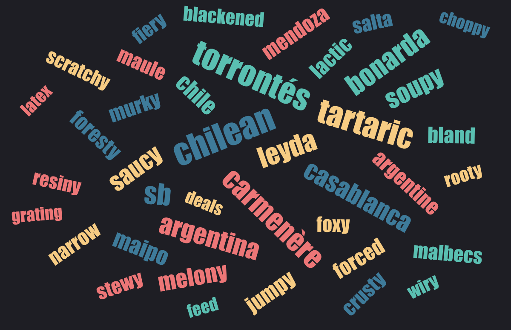

WebAssembly aims to execute at near-native speed
How can we make use of that?
Take set of 150k wine reviews from Twitter and generate a word cloud from a subset of the reviews with the most relevant words
We don't want the most frequent but the most relevant words
For our example we use TF-IDF
TF-IDF value for a word = TF * IDF
Frequency of the word offset by how rare it isIn our case a good measure to filter out common words like 'is', 'the', 'wine', etc.
Let's try to speed it up!
Create a WebAssembly module that can generate exactly the same word cloud
Use
Processing function
#[wasm_bindgen]
pub fn process_with_wasm(text: &str) {
processing::process(text)
}
Word cloud function
Returns the most relevant words with an importance score
#[wasm_bindgen]
pub fn analyze_sample_with_wasm(min_price: u16,
max_price: u16,
countries: JsValue
) -> JsValue {
let countries: Vec<String> = countries.into_serde()
.unwrap();
JsValue::from_serde(&processing::analyze_sample(
min_price, max_price, &countries,
))
.unwrap()
}
#[wasm_bindgen]
pub fn analyze_sample_with_wasm(min_price: u16,
max_price: u16,
countries: JsValue
) -> JsValue { ... }
Non-primitive values (objects/structs, lists of objects) can be passed as JSValue through JSON marshalling